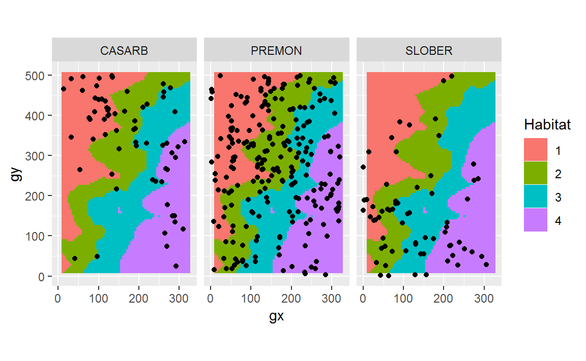
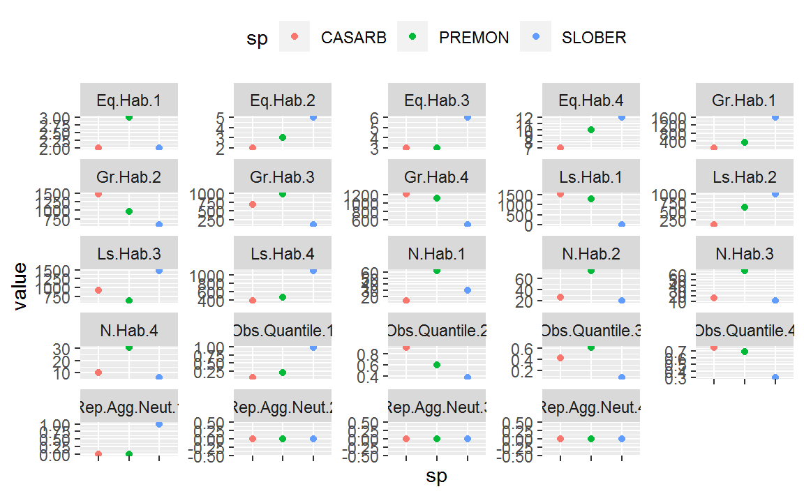

vignettes/tt_test.Rmd
tt_test.RmdThis article shows how to determine habitat-species associations with the function tt_test(), developed by Sabrina Russo, Daniel Zuleta, Matteo Detto, and Kyle Harms.
To suggest changes to the source code please file a pull request on the GitHub repository of the relevant package. You can search all functions and packages here. Each function’s help file links to its source code.
First, install and load (“open”) the relevant packages. (If this code chunks isn’t clear enough, see this article for details on how to install packages from GitHub.)
we’ll use example datasets that come with fgeo.habitat.
census <- luquillo_tree6_random
str(census)
#> Classes 'tbl_df', 'tbl' and 'data.frame': 1004 obs. of 19 variables:
#> $ treeID : int 104 119 180 602 631 647 1086 1144 1168 1380 ...
#> $ stemID : int 143 158 225 736 775 793 1339 1410 1438 1702 ...
#> $ tag : chr "10009" "100104" "100171" "100649" ...
#> $ StemTag : chr "10009" "100104" "100174" "100649" ...
#> $ sp : chr "DACEXC" "MYRSPL" "CASARB" "GUAGUI" ...
#> $ quadrat : chr "113" "1021" "921" "821" ...
#> $ gx : num 10.3 182.9 164.6 149 38.3 ...
#> $ gy : num 245 410 410 414 245 ...
#> $ MeasureID: int 582850 578696 617049 614253 598429 614211 603131 616923 603151 614023 ...
#> $ CensusID : int 6 6 6 6 6 6 6 6 6 6 ...
#> $ dbh : num 195 44.9 46.1 33.1 139 248 176 75 613 NA ...
#> $ pom : chr "1.45" "1.25" "1.35" "1.3" ...
#> $ hom : num 1.45 1.26 1.34 1.3 1.25 1.35 1.42 1.3 1.25 NA ...
#> $ ExactDate: num 16911 17017 17017 17011 16912 ...
#> $ DFstatus : chr "alive" "alive" "alive" "alive" ...
#> $ codes : chr "MAIN;A" "MAIN;A" "SPROUT;A" "MAIN;A" ...
#> $ nostems : num 1 1 2 1 1 1 1 1 1 1 ...
#> $ status : chr "A" "A" "A" "A" ...
#> $ date : num NA NA NA NA NA NA NA NA NA NA ...# Creating habitat data from elevation data
habitat <- fgeo.tool::fgeo_habitat(luquillo_elevation, gridsize = 20, n = 4)
str(habitat)
#> Classes 'fgeo_habitat', 'tbl_df', 'tbl' and 'data.frame': 503 obs. of 3 variables:
#> $ gx : int 0 0 0 0 0 0 0 0 0 0 ...
#> $ gy : int 0 20 40 40 60 80 80 100 120 140 ...
#> $ habitats: int 1 1 1 2 2 2 1 1 1 1 ...To load your own data, you may run something like this:
We’ll pick alive trees, of 10 mm or more, and of sufficiently abundant species.
pick <- filter(
census,
# Keep only alive
status == "A",
# Keep dbh of 10 mm or more (drops missing dbh)
dbh >= 10
)
# Count number of rows per species
pick <- add_count(pick, sp)
# Keep sufficiently abundant trees
pick <- filter(pick, n > 50)
# Summary
unique(select(pick, sp, n))
#> # A tibble: 3 x 2
#> sp n
#> <chr> <int>
#> 1 CASARB 66
#> 2 PREMON 234
#> 3 SLOBER 66Before testing, we can overview the relationship between species an habitats with a plot.
# Tweaks
offset <- 20 / 2
habitat2 <- mutate(
habitat,
# Center species and habitat data
x = gx + offset,
y = gy + offset,
# From continuous to categorical
habitats = as.factor(habitats)
)ggplot(pick, aes(x = gx, y = gy)) +
geom_raster(data = habitat2, aes(x, y, fill = habitats)) +
geom_point() +
coord_fixed() +
facet_wrap(~sp) +
labs(fill = "Habitat")
tt_test() and any number of speciesall_sp <- unique(pick$sp)
out <- tt_test(census, all_sp, habitat)
#> Warning in matrix(hab.index20$habitats, nrow = plotdimqy, ncol =
#> plotdimqx, : data length [503] is not a sub-multiple or multiple of the
#> number of rows [25]
#> Warning in matrix(hab.index20$habitats, nrow = plotdimqy, ncol =
#> plotdimqx, : data length [503] is not a sub-multiple or multiple of the
#> number of rows [25]
#> Warning in matrix(hab.index20$habitats, nrow = plotdimqy, ncol =
#> plotdimqx, : data length [503] is not a sub-multiple or multiple of the
#> number of rows [25]
head(out)
#> [[1]]
#> N.Hab.1 Gr.Hab.1 Ls.Hab.1 Eq.Hab.1 Rep.Agg.Neut.1 Obs.Quantile.1
#> CASARB 13 76 1522 2 0 0.0475
#> N.Hab.2 Gr.Hab.2 Ls.Hab.2 Eq.Hab.2 Rep.Agg.Neut.2 Obs.Quantile.2
#> CASARB 26 1471 127 2 0 0.919
#> N.Hab.3 Gr.Hab.3 Ls.Hab.3 Eq.Hab.3 Rep.Agg.Neut.3 Obs.Quantile.3
#> CASARB 17 682 915 3 0 0.426
#> N.Hab.4 Gr.Hab.4 Ls.Hab.4 Eq.Hab.4 Rep.Agg.Neut.4 Obs.Quantile.4
#> CASARB 10 1214 379 7 0 0.759
#>
#> [[2]]
#> N.Hab.1 Gr.Hab.1 Ls.Hab.1 Eq.Hab.1 Rep.Agg.Neut.1 Obs.Quantile.1
#> PREMON 62 330 1267 3 0 0.206
#> N.Hab.2 Gr.Hab.2 Ls.Hab.2 Eq.Hab.2 Rep.Agg.Neut.2 Obs.Quantile.2
#> PREMON 74 972 625 3 0 0.608
#> N.Hab.3 Gr.Hab.3 Ls.Hab.3 Eq.Hab.3 Rep.Agg.Neut.3 Obs.Quantile.3
#> PREMON 67 981 616 3 0 0.613
#> N.Hab.4 Gr.Hab.4 Ls.Hab.4 Eq.Hab.4 Rep.Agg.Neut.4 Obs.Quantile.4
#> PREMON 31 1115 475 10 0 0.697
#>
#> [[3]]
#> N.Hab.1 Gr.Hab.1 Ls.Hab.1 Eq.Hab.1 Rep.Agg.Neut.1 Obs.Quantile.1
#> SLOBER 30 1579 19 2 1 0.987
#> N.Hab.2 Gr.Hab.2 Ls.Hab.2 Eq.Hab.2 Rep.Agg.Neut.2 Obs.Quantile.2
#> SLOBER 19 597 998 5 0 0.373
#> N.Hab.3 Gr.Hab.3 Ls.Hab.3 Eq.Hab.3 Rep.Agg.Neut.3 Obs.Quantile.3
#> SLOBER 11 118 1476 6 0 0.0737
#> N.Hab.4 Gr.Hab.4 Ls.Hab.4 Eq.Hab.4 Rep.Agg.Neut.4 Obs.Quantile.4
#> SLOBER 6 483 1105 12 0 0.302You can gather all results into a single dataframe – which lets you use a wide range of tools (from the tidyverse and other packages) for data manipulation and visualization.
tt_df <- to_df(out)
head(tt_df)
#> metric sp value
#> 1 N.Hab.1 CASARB 1.30e+01
#> 2 Gr.Hab.1 CASARB 7.60e+01
#> 3 Ls.Hab.1 CASARB 1.52e+03
#> 4 Eq.Hab.1 CASARB 2.00e+00
#> 5 Rep.Agg.Neut.1 CASARB 0.00e+00
#> 6 Obs.Quantile.1 CASARB 4.75e-02
tail(tt_df)
#> metric sp value
#> 67 N.Hab.4 SLOBER 6.000
#> 68 Gr.Hab.4 SLOBER 483.000
#> 69 Ls.Hab.4 SLOBER 1105.000
#> 70 Eq.Hab.4 SLOBER 12.000
#> 71 Rep.Agg.Neut.4 SLOBER 0.000
#> 72 Obs.Quantile.4 SLOBER 0.302This final section shows some examples of how you can benefit from storing your results in a dataframe. Compared to a matrix, a dataframe fits better in common workflows for data manipulation and visualization. The dataframe is the most important data structure used in dplyr, ggplot2, and all other packages in the tidyverse. Here are some examples of what you can do with our dataframe output.
spread(tt_df, sp, value)
#> metric CASARB PREMON SLOBER
#> 1 Eq.Hab.1 2.00e+00 3.000 2.00e+00
#> 2 Eq.Hab.2 2.00e+00 3.000 5.00e+00
#> 3 Eq.Hab.3 3.00e+00 3.000 6.00e+00
#> 4 Eq.Hab.4 7.00e+00 10.000 1.20e+01
#> 5 Gr.Hab.1 7.60e+01 330.000 1.58e+03
#> 6 Gr.Hab.2 1.47e+03 972.000 5.97e+02
#> 7 Gr.Hab.3 6.82e+02 981.000 1.18e+02
#> 8 Gr.Hab.4 1.21e+03 1115.000 4.83e+02
#> 9 Ls.Hab.1 1.52e+03 1267.000 1.90e+01
#> 10 Ls.Hab.2 1.27e+02 625.000 9.98e+02
#> 11 Ls.Hab.3 9.15e+02 616.000 1.48e+03
#> 12 Ls.Hab.4 3.79e+02 475.000 1.10e+03
#> 13 N.Hab.1 1.30e+01 62.000 3.00e+01
#> 14 N.Hab.2 2.60e+01 74.000 1.90e+01
#> 15 N.Hab.3 1.70e+01 67.000 1.10e+01
#> 16 N.Hab.4 1.00e+01 31.000 6.00e+00
#> 17 Obs.Quantile.1 4.75e-02 0.206 9.87e-01
#> 18 Obs.Quantile.2 9.19e-01 0.608 3.73e-01
#> 19 Obs.Quantile.3 4.26e-01 0.613 7.37e-02
#> 20 Obs.Quantile.4 7.59e-01 0.697 3.02e-01
#> 21 Rep.Agg.Neut.1 0.00e+00 0.000 1.00e+00
#> 22 Rep.Agg.Neut.2 0.00e+00 0.000 0.00e+00
#> 23 Rep.Agg.Neut.3 0.00e+00 0.000 0.00e+00
#> 24 Rep.Agg.Neut.4 0.00e+00 0.000 0.00e+00(The next few code chunks use the pipe operator (%>%) to avoid saving intermediary results and to make our code more expressive – where each line is an imperative statement that communicates our intention.)
tt_df %>%
mutate_if(is.character, tolower) %>%
mutate_if(is.numeric, round, 2) %>%
mutate(metric = str_replace_all(metric, fixed("."), "_")) %>%
head()
#> metric sp value
#> 1 n_hab_1 casarb 13.00
#> 2 gr_hab_1 casarb 76.00
#> 3 ls_hab_1 casarb 1522.00
#> 4 eq_hab_1 casarb 2.00
#> 5 rep_agg_neut_1 casarb 0.00
#> 6 obs_quantile_1 casarb 0.05tt_df %>%
filter(sp %in% c("SLOBER", "PREMON"), grepl("Gr", metric)) %>%
arrange(metric, desc(value))
#> metric sp value
#> 1 Gr.Hab.1 SLOBER 1579
#> 2 Gr.Hab.1 PREMON 330
#> 3 Gr.Hab.2 PREMON 972
#> 4 Gr.Hab.2 SLOBER 597
#> 5 Gr.Hab.3 PREMON 981
#> 6 Gr.Hab.3 SLOBER 118
#> 7 Gr.Hab.4 PREMON 1115
#> 8 Gr.Hab.4 SLOBER 483tt_df %>%
group_by(metric) %>%
summarise(mean = mean(value), max = max(value), min = min(value))
#> # A tibble: 24 x 4
#> metric mean max min
#> <chr> <dbl> <dbl> <dbl>
#> 1 Eq.Hab.1 2.33 3 2
#> 2 Eq.Hab.2 3.33 5 2
#> 3 Eq.Hab.3 4 6 3
#> 4 Eq.Hab.4 9.67 12 7
#> 5 Gr.Hab.1 662. 1579 76
#> 6 Gr.Hab.2 1013. 1471 597
#> 7 Gr.Hab.3 594. 981 118
#> 8 Gr.Hab.4 937. 1214 483
#> 9 Ls.Hab.1 936 1522 19
#> 10 Ls.Hab.2 583. 998 127
#> # ... with 14 more rows(Unfortunately, ggplot2 was developed before the pipe was invented. In ggplot2, we compose functions not with %>% but with +.)
ggplot(tt_df, aes(sp, value, color = sp)) +
geom_point() +
facet_wrap("metric", scales = "free_y") +
theme(axis.text.x = element_blank(), legend.position = "top")
torusonesp.all() and one speciesBefore we used tt_test(), a wrapper of torusonesp.all(). This section shows how you may use torusonesp.all() directly to test a single species. The following section shows how to extend the test to any number of species.
See ?torusonesp.all(); you’ll find out that this function needs the name of one species, a census, and habitat data. All of these we already have (above). But this function also needs plot dimensions, grid size and the abundance (count) of each species per quadrat-index.
We should find and store the plot dimensions and gridsize because we’ll need them in more than one function and they must be consistent. To understand which values to choose we may inspect the structure of the habitat (plot details).
You can find information about each ForestGEO site at https://forestgeo.si.edu/sites-all. Also, consider these functions:
plot_dimensions <- extract_plotdim(habitat)
plot_dimensions
#> [1] 320 500
grid_size <- extract_gridsize(habitat)
grid_size
#> [1] 20To calculate abundance per quadrat-index you may use the function abundanceperquad() from the original CTFSRPackage, or a more conservative wrapper, abund_index(), from fgeo.habitat.
# For details see ?abund_index()
abundance <- abund_index(pick, plot_dimensions, grid_size)
# Show only a few lines of output
str(abundance, list.len = 5)
#> 'data.frame': 3 obs. of 400 variables:
#> $ 1 : num 0 1 0
#> $ 2 : num 0 0 0
#> $ 3 : num 0 0 0
#> $ 4 : num 0 0 0
#> $ 5 : num 0 0 0
#> [list output truncated]Now that we have all we need, we can run torusonesp.all().
one_species <- unique(pick$sp)[[1]]
one_species
#> [1] "CASARB"
out_one <- torusonesp.all(
one_species, habitat, abundance, plot_dimensions, grid_size
)
#> Warning in matrix(hab.index20$habitats, nrow = plotdimqy, ncol =
#> plotdimqx, : data length [503] is not a sub-multiple or multiple of the
#> number of rows [25]
out_one
#> N.Hab.1 Gr.Hab.1 Ls.Hab.1 Eq.Hab.1 Rep.Agg.Neut.1 Obs.Quantile.1
#> CASARB 13 73 1524 3 0 0.0456
#> N.Hab.2 Gr.Hab.2 Ls.Hab.2 Eq.Hab.2 Rep.Agg.Neut.2 Obs.Quantile.2
#> CASARB 26 1365 230 5 0 0.853
#> N.Hab.3 Gr.Hab.3 Ls.Hab.3 Eq.Hab.3 Rep.Agg.Neut.3 Obs.Quantile.3
#> CASARB 17 850 741 9 0 0.531
#> N.Hab.4 Gr.Hab.4 Ls.Hab.4 Eq.Hab.4 Rep.Agg.Neut.4 Obs.Quantile.4
#> CASARB 10 1115 480 5 0 0.697torusonesp.all() and any number of speciesTo iterate over multiple species you may write a for loop, or use a functional such as lapply() or map().
all_species <- unique(pick$sp)
map(all_species, torusonesp.all, habitat, abundance, plot_dimensions, grid_size)
#> Warning in matrix(hab.index20$habitats, nrow = plotdimqy, ncol =
#> plotdimqx, : data length [503] is not a sub-multiple or multiple of the
#> number of rows [25]
#> Warning in matrix(hab.index20$habitats, nrow = plotdimqy, ncol =
#> plotdimqx, : data length [503] is not a sub-multiple or multiple of the
#> number of rows [25]
#> Warning in matrix(hab.index20$habitats, nrow = plotdimqy, ncol =
#> plotdimqx, : data length [503] is not a sub-multiple or multiple of the
#> number of rows [25]
#> [[1]]
#> N.Hab.1 Gr.Hab.1 Ls.Hab.1 Eq.Hab.1 Rep.Agg.Neut.1 Obs.Quantile.1
#> CASARB 13 73 1524 3 0 0.0456
#> N.Hab.2 Gr.Hab.2 Ls.Hab.2 Eq.Hab.2 Rep.Agg.Neut.2 Obs.Quantile.2
#> CASARB 26 1365 230 5 0 0.853
#> N.Hab.3 Gr.Hab.3 Ls.Hab.3 Eq.Hab.3 Rep.Agg.Neut.3 Obs.Quantile.3
#> CASARB 17 850 741 9 0 0.531
#> N.Hab.4 Gr.Hab.4 Ls.Hab.4 Eq.Hab.4 Rep.Agg.Neut.4 Obs.Quantile.4
#> CASARB 10 1115 480 5 0 0.697
#>
#> [[2]]
#> N.Hab.1 Gr.Hab.1 Ls.Hab.1 Eq.Hab.1 Rep.Agg.Neut.1 Obs.Quantile.1
#> PREMON 62 252 1346 2 0 0.158
#> N.Hab.2 Gr.Hab.2 Ls.Hab.2 Eq.Hab.2 Rep.Agg.Neut.2 Obs.Quantile.2
#> PREMON 74 526 1065 9 0 0.329
#> N.Hab.3 Gr.Hab.3 Ls.Hab.3 Eq.Hab.3 Rep.Agg.Neut.3 Obs.Quantile.3
#> PREMON 67 1430 165 5 0 0.894
#> N.Hab.4 Gr.Hab.4 Ls.Hab.4 Eq.Hab.4 Rep.Agg.Neut.4 Obs.Quantile.4
#> PREMON 31 979 617 4 0 0.612
#>
#> [[3]]
#> N.Hab.1 Gr.Hab.1 Ls.Hab.1 Eq.Hab.1 Rep.Agg.Neut.1 Obs.Quantile.1
#> SLOBER 30 1588 11 1 1 0.993
#> N.Hab.2 Gr.Hab.2 Ls.Hab.2 Eq.Hab.2 Rep.Agg.Neut.2 Obs.Quantile.2
#> SLOBER 19 456 1137 7 0 0.285
#> N.Hab.3 Gr.Hab.3 Ls.Hab.3 Eq.Hab.3 Rep.Agg.Neut.3 Obs.Quantile.3
#> SLOBER 11 146 1450 4 0 0.0912
#> N.Hab.4 Gr.Hab.4 Ls.Hab.4 Eq.Hab.4 Rep.Agg.Neut.4 Obs.Quantile.4
#> SLOBER 6 419 1172 9 0 0.262